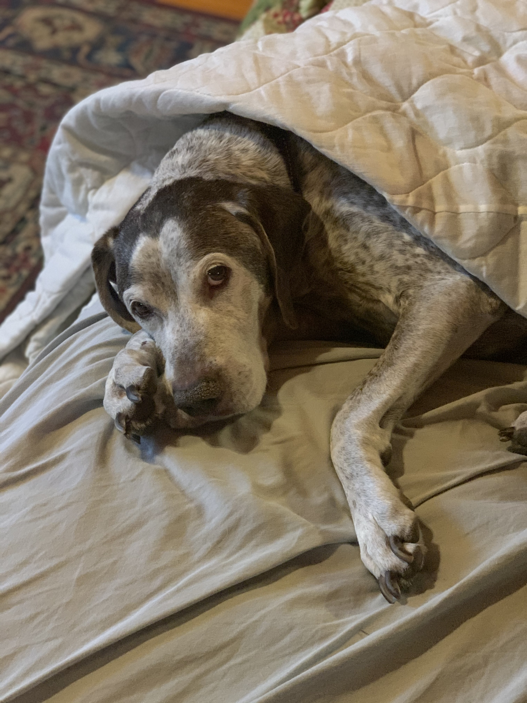

About Quigley
Quigley is the beloved dog of the Soohey household. He loves eating treats in between sessions of napping.
Naptime
What's Quigley like?
- He is 12 years old
- He has a gift for snacking and barking at invisible humans
- He gets tuckered out from all of his anxiety
Quilgey Trivia
Quigley had a sister named Halo. His biological mother also had a name taken from a character in the Tom Selleck classic Quigley Down Under.: